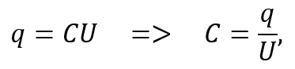
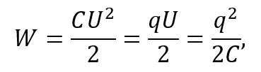
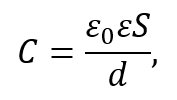
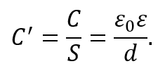
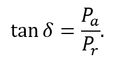
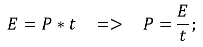
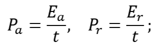
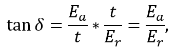
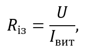

Конденсатор. Принцип роботи та характеристики

Рисунок 2.2.1. Паралельно з’єднані 2 конденсатори в електричному колі (схема)
Конденсатор – це електричний компонент, призначений для накопичення електричного заряду і енергії електричного поля. Він складається з двох провідних пластин (обкладок), розділених шаром діелектрика, товщина якого значно менша в порівнянні з розмірами обкладок. У схемах конденсатор позначається символом С, а його умовне графічне зображення наведено на рисунку 2.2.1.
Принцип накопичення конденсатором заряду та енергії такий: коли до конденсатора прикладається напруга, на одній з обкладок накопичується позитивний електричний заряд, на іншій же – негативний. Діелектричний прошарок між обкладками запобігає їх з’єднанню, тим самим зберігаючи заряд.
Конденсатор заряджається під час протікання через нього струму, і розряджається, коли струм зникає. Це явище використовується для тимчасового зберігання енергії або стабілізації напруги в електричних ланцюгах. В електричних ланцюгах такий компонент виконує роль енергетичного буфера, який згладжує пульсації напруги та забезпечує стабільність роботи електронних пристроїв.
Основною характеристикою конденсаторів є електрична ємність – величина, що показує кількість заряду, яку він може накопичити при певній напрузі. З означення, ємність можна характеризувати співвідношенням:

де C – ємність конденсатора, q – заряд на одній з обкладок, U – напруга між обкладками.
Електрична енергія зарядженого конденсатора напряму залежить від ємності та напруги і визначається за формулою:

де W – енергія, C – ємність конденсатора, U – напруга, q – заряд на одній з обкладок.
Ця енергія може використовуватися для тимчасового живлення навантажень, згладжування пульсацій напруги або накопичення запасу енергії у схемі.
Номінальна ємність – вказана на конденсаторі ємність, на яку він розрахований. Фактична ємність може незначно відрізнятися від номінальної через певні технологічні допуски, температуру, частоту та інші умови роботи.
Ємність конденсатора вимірюється у фарадах (Ф), 1 Ф = 1 Кл/В. Один фарад є доволі великим значенням, тому на практиці ємність конденсаторів виражають у мілі-, мікро-, нано- та пікофарадах. Однак, існують прилади з ємністю до десятків фарад – іоністори (ультраконденсатори).
Для плаского конденсатора, який складається з двох паралельних металічних пластин на деякій відстані, може бути застосована інша формула ємності:

де S – площа пластин, d – відстань між пластинами (або товщина прошарку діелектрика), ε – відносна діелектрична проникність середовища між пластинами, ε0 – електрична стала (позначає проникність вакууму і дорівнює приблизно 8,85 * 10-12 Ф/м).
Ця формула є справедливою для всіх випадків, де відстань d набагато менша за лінійні розміри пластин конденсатора.
У деяких випадках користуються поняттям питомої ємності – тобто ємності, що припадає на одиницю площі обкладок. Вона визначається виразом:

Не менш важливою характеристикою конденсатора, що визначає його експлуатаційні межі, є номінальна напруга – максимальна напруга, на яку розрахований конденсатор і яку він може тривалий час витримувати без втрати своїх параметрів.
Робоча напруга – це фактична напруга в електричному колі, при якій конденсатор працює, і вона зазвичай на 20–30 % нижча за номінальну, щоб урахувати реальні умови експлуатації (пульсації струму, температурні коливання) та забезпечити надійну роботу.
Номінальна напруга залежить від конструкції конденсатора і властивостей застосованих матеріалів. Для більшості типів конденсаторів із підвищенням температури допустима напруга зменшується.
Значення номінальної напруги обирають із запасом щодо пробивної напруги – тобто такої напруги, при якій діелектрик втрачає свої електроізоляційні властивості й стає провідником. Таке явище називається пробоєм. Зазвичай номінальна напруга становить близько 1,5–3 разів менше пробивної, що забезпечує безпечну і стабільну роботу конденсатора.
На відміну від ідеального конденсатора, який лише накопичує та віддає енергію, реальний має деякі енергетичні втрати у вигляді тепла в діелектрику та на обкладках. Показник енергії, яка втрачається при роботі конденсатора у вигляді тепла, називається тангенсом кута діелектричних втрат. Виражається відношенням активної потужності Pa до реактивної Pr:

Активна потужність Pa – потужність, що розсіюється в діелектрику і перетворюється на тепло. Реактивна потужність Pr – потужність, що накопичується в діелектрику.
Формулу тангенса кута втрат можна переписати через енергію, виразивши потужність з її визначення:



де Ea – втрачена енергія, Er – накопичена енергія, t – інтервал часу вимірювань.
Малий тангенс кута діелектричних втрат свідчить про високу якість конденсатора.
Величина, обернена до тангенсу кута втрат, називається добротністю конденсатора.
Температурний коефіцієнт ємності (ТКЄ) – параметр, що характеризує зміну ємності конденсатора при температурному коливанні на один градус. Зазвичай виражається у мільйонних долях на градус (10-6/°С або ppm/°С) і може бути додатнім або від’ємним. При додатному ТКЄ ємність конденсатора збільшується, при від’ємному – зменшується.
Різні діелектрики мають різні ТКЄ, можуть мати вищий або нижчий, більш або менш стабільний. До цього ж, не для всіх конденсаторів можна розрахувати ТКЄ: у нестабільних конденсаторах, ємність яких залежить не лише від температури, а й від інших факторів, цей параметр дуже важко точно визначити.
ТКЄ вказують там, де важлива стабільність ємності при зміні температури – наприклад, у високочастотних схемах, резонансних контурах, точних фільтрах. Для конденсаторів, де невеликі коливання ємності не критичні, ТКЄ часто не наводять.
Електричний опір ізоляції конденсатора – величина, яка описує опір конденсатора постійному струму і визначається за формулою:

де U – напруга на конденсаторі, Iвит – струм витоку.
В ідеальному конденсаторі струм не протікає через діелектрик після його зарядки (Iвит = 0), тому опір ізоляції прямував би до нескінченності. У реальних конденсаторів опір обмежений і залежить від типу діелектрика, товщини шару, температури та вологості.
Високий опір ізоляції забезпечує довготривале збереження заряду та мінімальні втрати енергії, тоді як низький опір призводить до значного струму витоку, швидшого розряду та нагрівання конденсатора.